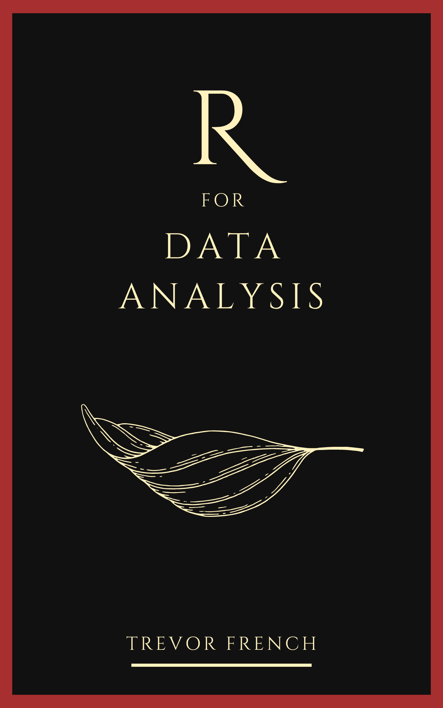

R for Data Analysis

1 Introduction
“There is synthesis when, in combining therein judgments that are made known to us from simpler relations, one deduces judgments from them relative to more complicated relations. There is analysis when from a complicated truth one deduces more simple truths.”
-André-Marie Ampère (Hofmann 1996)
Everyone is a data analyst. The purpose of this book is to inspire and enable anyone who reads it to reconsider the methods they currently employ to analyse data. This is not to suggest that the methodologies outlined will be useful or sufficient for everyone who reads it. Some analyses can be performed quickly without the need for additional computation while others will require advanced analytics techniques not outlined in this book; however, the aspiration is that all will be equipped with novel tools and ideas for approaching data analysis.
1.1 Prerequisites
No prior knowledge is required to begin this book. The content will start at the very beginning by showing you how to set up your R environment and the basics of programming in R. By the end of the book, you will be able to perform intermediate analytics techniques such as linear regression and automatic report generation.
You will need an environment which you use to run your code. It is recommended that you download R and R Studio locally for this requirement. This book will walk you through how to do that as well as offer alternatives if that is not an option for you.
1.2 Structure of the Book
- Part I (Fundamentals) will introduce you to the basics of programming in the context of R.
- Part II (Data Acquisition) will teach you how to create, import, and access data.
- Part III (Data Preparation) will show you how to begin preparing your data for analysis.
- Part IV (Developing Insights) goes through the process of searching for and extracting insights from your data.
- Part V (Reporting) demonstrates how to wrap your analysis up by developing and automating reports.
Each part will contain several chapters which cover specific ideas related to the overarching topic. At the end of each of these chapters you will find additional resources for you to use to dive deeper into the ideas. Each part will be concluded with practical exercises for you to test your skills.
While sections of this book could be used to supplement formal education programs, it was initially designed to be used for independent study.
1.3 License

This work is free to use, and is licensed under a Creative Commons Attribution-NonCommercial-NoDerivatives 4.0 International License.
1.4 About Me
I have an M.S. in Data Analytics, a B.S. in Business Analytics, and currently work in industry as an Analytics Manager for a software company. I began my journey into analytics by working as a Data Analyst for the university I was attending. This role allowed me to automate processes, build dashboards, deliver reports to executive stakeholders, and provide insight on how operations might be improved. I performed this role until I was promoted to lead the team. Later, I worked for a major CPG company driving pricing and promotion strategy for a large piece of the business.
Despite my education, most of my basic analytics knowledge was hard-won through self-study. I created this resource to be what I wish I had when I started my journey into the analytics domain. Additionally, I don’t believe that one must be a domain expert to be effective at analyzing data. In fact, I think most people can quickly learn the skills necessary to be very effective at it.
Physical copies of this book are not currently available; however, you can download a pdf in the top left corner of this site. Feel free to contribute by reporting a typo or leaving a pull request at https://github.com/TrevorFrench/R-for-Data-Analysis.